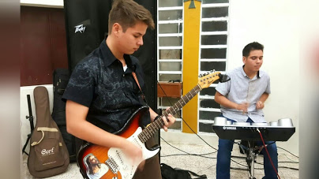
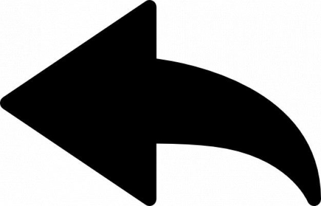

La siguiente grabación es un cover de mi amiga Laura Etzi en el cual yo grabé las guitarras.
El siguiente video es un cover del solo de Steve Lukather en la canción "Rossana".
La siguiente grabación fue realizada para un concurso católico de canción guatemalteca a nivel departamental, en el cual grabé la guitarra.
